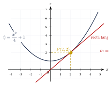
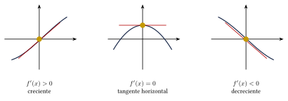
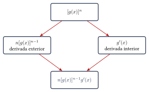
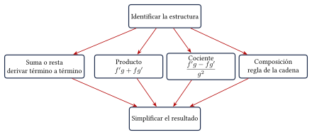

Capítulo 40
La derivada
UNAM IPN
La derivada mide la rapidez con la que cambia una función.
Geométricamente, representa la pendiente de la recta tangente a una curva. En aplicaciones físicas puede representar velocidad, aceleración, crecimiento o cualquier razón de cambio instantánea.
40.1 Concepto de derivada#
La derivada de una función \(f\) se define mediante:
si el límite existe.
También puede escribirse como:
La derivada en un punto:
es la pendiente de la recta tangente a la gráfica de \(f\) en:
La ecuación de la recta tangente es:

La recta secante pasa por dos puntos de la curva. Cuando el segundo punto se aproxima al primero, la recta secante se aproxima a la recta tangente.
40.2 Interpretación del signo#

40.3 Reglas básicas de derivación#
40.3.1 Constante#
40.3.2 Potencia#
40.3.3 Múltiplo constante#
40.3.4 Suma y resta#
Deriva:
Ver solución
Derivamos término a término:
Por tanto:
Deriva:
Ver solución
Escribimos:
Entonces:
Por tanto:
40.4 Producto y cociente#
40.4.1 Regla del producto#
Una forma útil de recordarla es:
Deriva:
Ver solución
Definimos:
Entonces:
Aplicamos la regla del producto:
Simplificamos:
40.4.2 Regla del cociente#
con:
Deriva:
Ver solución
Entonces:
Simplificamos:
La derivada de un producto no es:
La derivada de un cociente tampoco es:
Deben utilizarse las reglas completas.
40.5 Regla de la cadena#
Si una función está compuesta dentro de otra:
entonces:
De manera práctica:

Deriva:
Ver solución
La función exterior es la cuarta potencia:
La derivada interior es:
Multiplicamos:
Deriva:
Ver solución
Escribimos:
Aplicamos la regla de la cadena:
Por tanto:
40.6 Derivadas trigonométricas#
Los ángulos deben estar expresados en radianes.
Con regla de la cadena:
Deriva:
Ver solución
Deriva:
Ver solución
Aplicamos la regla de la cadena:
Por tanto:
Deriva:
Ver solución
Por tanto:
40.7 Funciones exponenciales y logarítmicas#
Con regla de la cadena:
Deriva:
Ver solución
Por tanto:
Deriva:
Ver solución
Por tanto:
Deriva:
Ver solución
Por tanto:
40.8 Resumen de reglas#
40.9 Derivación implícita#
Cuando una ecuación contiene a \(x\) y \(y\) sin despejar, se deriva implícitamente.
Cada vez que se deriva una expresión con \(y\), debe multiplicarse por:
Encuentra:
si:
Ver solución
Derivamos:
Despejamos:
Por tanto:
Encuentra:
si:
Ver solución
Derivamos término a término:
Agrupamos:
Despejamos:
Por tanto:
Al derivar el producto:
debe utilizarse la regla del producto:
40.10 Recta tangente y recta normal#
Sea:
La pendiente tangente es:
La recta tangente es:
Si:
la pendiente de la recta normal es:
Encuentra la recta tangente a:
en:
Ver solución
El punto es:
Derivamos:
La pendiente en \(x=2\) es:
Utilizamos la forma punto-pendiente:
Por tanto:
40.11 Razón de cambio#
Si una posición está dada por:
entonces la velocidad instantánea es:
La aceleración es:
La posición de una partícula es:
Encuentra la velocidad y la aceleración.
Ver solución
La velocidad es:
La aceleración es:
Por tanto:
y:
40.12 Derivadas sucesivas#
La segunda derivada es:
También se escribe:
Las derivadas posteriores se representan mediante:
Encuentra la segunda derivada de:
Ver solución
Primera derivada:
Segunda derivada:
Encuentra:
si:
Ver solución
Cada derivada introduce un factor \(2\):
Por tanto:
40.13 Procedimiento rápido#
- Simplifica la función si es posible.
Identifica la operación principal:
- suma o resta;
- producto;
- cociente;
- composición.
- Selecciona la regla correspondiente.
- Si existe una función dentro de otra, aplica la regla de la cadena.
- Simplifica la derivada.
- Verifica el dominio de la función original.

40.14 Errores frecuentes#
Recuerda:
- En la regla de la potencia, el exponente disminuye en una unidad: \[x^n\longrightarrow nx^{n-1}.\]
- La derivada de una constante es cero.
- La derivada de un producto no es el producto de las derivadas.
- La derivada de un cociente no es el cociente de las derivadas.
- En una función compuesta debe incluirse la derivada de la función interior.
- Se cumple: \[(\cos x)'=-\sen x.\]
- Se cumple: \[(\ln u)'=\frac{u'}{u},\] no solamente \(1/u\).
- En derivación implícita, cada derivada de \(y\) incluye: \[\frac{dy}{dx}.\]
- Las fórmulas trigonométricas de derivación suponen que los ángulos se expresan en radianes.
40.15 Ejercicios propuestos#
Deriva:
Ver solución
Derivamos término a término: \[f'(x)=21x^2-8x+6.\]
Deriva:
Ver solución
Aplicamos la regla del cociente: \[f'(x)=\frac{3(x-1)-(3x+2)(1)}{(x-1)^2}=\frac{3x-3-3x-2}{(x-1)^2}=-\frac{5}{(x-1)^2}.\]
Deriva:
Ver solución
Aplicamos la regla del producto: \[f'(x)=(2x)(2x-3)+(x^2+1)(2)=4x^2-6x+2x^2+2=6x^2-6x+2.\]
Deriva:
Ver solución
Aplicamos las reglas trigonométricas con regla de la cadena: \[f'(x)=2\cos(2x)-3\sen(3x).\]
Deriva:
Ver solución
Aplicamos la regla del producto: \[f'(x)=\sec^2 x\sen x+\tan x\cos x.\] (Esto puede simplificarse a \(\sec x\tan x+\sen x\)).
Deriva:
Ver solución
Aplicamos la regla del logaritmo: \[f'(x)=\frac{3x^2+2}{x^3+2x}.\]
Deriva:
Ver solución
Aplicamos la regla exponencial con regla de la cadena: \[f'(x)=e^{x^2+1}(2x)=2x e^{x^2+1}.\]
Deriva:
Ver solución
Aplicamos la regla de la cadena (potencia): \[f'(x)=5(3x^2-1)^4(6x)=30x(3x^2-1)^4.\]
Deriva:
Ver solución
Escribimos \(f(x)=(2x^2+5)^{1/2}\) y aplicamos regla de la cadena: \[f'(x)=\frac{1}{2}(2x^2+5)^{-1/2}(4x)=\frac{2x}{\sqrt{2x^2+5}}.\]
Encuentra:
si:
Ver solución
Derivamos implícitamente: \[2x+2y\frac{dy}{dx}=0.\] Despejando: \[\frac{dy}{dx}=-\frac{x}{y}.\]
Encuentra la recta tangente a:
en:
Ver solución
El punto es \((1,f(1))=(1,-1)\). La derivada es \(f'(x)=3x^2-2\), por lo que la pendiente es \(m_t=f'(1)=1\). La recta tangente es \(y-(-1)=1(x-1)\), lo que da \(y=x-2\).
Encuentra la segunda derivada de:
Ver solución
Calculamos la primera derivada: \[f'(x)=5x^4-6x^2+1.\] Calculamos la segunda derivada: \[f''(x)=20x^3-12x.\]